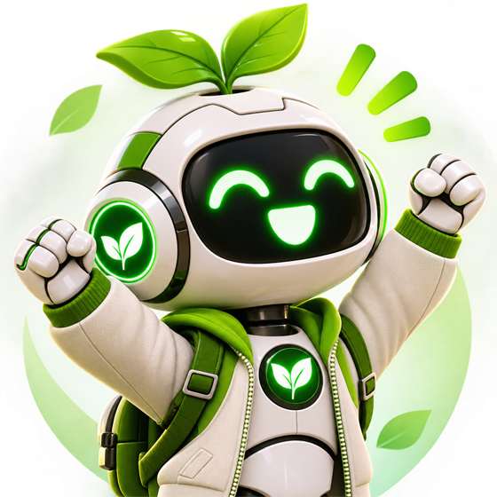

Dictado por voz
Escuchando…
Di: “botella de agua”, “caneca verde”, “caneca blanca” o “caneca negra”.
Di: “botella de agua”, “caneca verde”, “caneca blanca” o “caneca negra”.
Tu caneca es la blanca
Aprovechables
Un momento, la tapa se está levantando.
